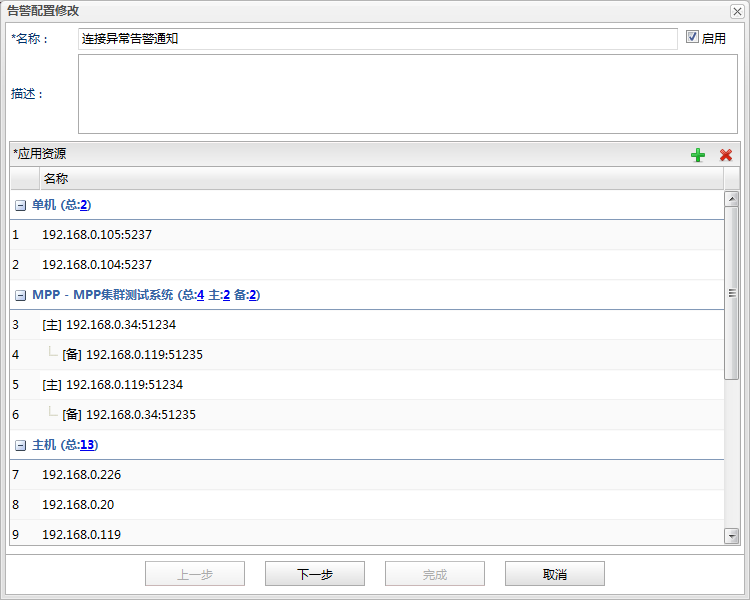
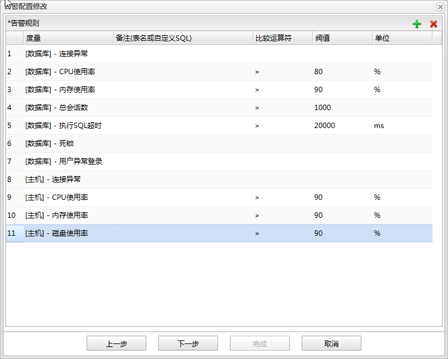
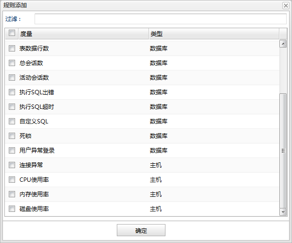
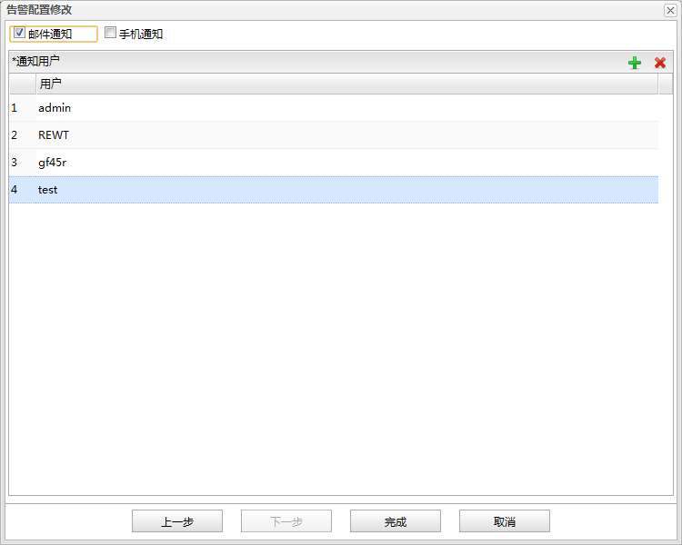
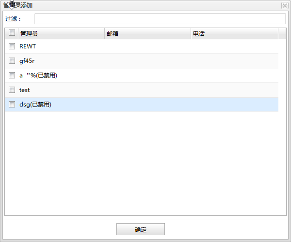

添加：点击表格右上角添加按钮，打开资源选择对话框，勾选需要应用的资源点击确定按钮。
添加：点击表格右上角添加按钮，打开资源选择对话框，勾选需要应用的资源点击确定按钮。
 删除：选中需要删除的资源点击表格右上角删除按钮。
删除：选中需要删除的资源点击表格右上角删除按钮。
告警的配置可以在告警配置面板上点击功能按钮添加，打开告警配置对话框，这是一个向导框，根据提示完成每一页上的配置即可。向导框分为三页：

名称
告警配置名称。
启用
是否启用告警配置。
描述
告警配置描述。
应用资源列表
告警配置应用到哪些资源上。资源列表按所属集群分组显示，所有主机为一组，所有单机也为一组；同时还保留了集群中站点的主备关系。
资源有数据库和主机两种类型，而告警规则也有数据库和主机两种类型，添加的告警规则会根据类型自动进行映射。例如:数据库-连接异常会映射到添加的所有数据库资源上；主机-连接异常会映射到所有主机资源上。

告警规则列表
告警规则列表。当实际检测到的值与阀值按比较运算符运算的结果为true时就会发出警告。
| 字段 | 说明 |
|---|---|
| 度量 | 告警规则应用资源类型和规则名称。 |
| 备注 | 备注信息，只有自定义sql和表监控告警规则有效。（双击可编辑，若双击不可编辑说明当前规则无需配置该列） 对于自定义sql规则该列中需要输入自定义SQL语句。 对于表监控规则该列中需要输入表名。 |
| 比较运算符 | 告警规则的比较运算符。（双击可编辑，若双击不可编辑说明当前规则无需配置该列） |
| 阀值 | 告警规则的阀值。（双击可编辑，若双击不可编辑说明当前规则无需配置该列） |
| 单位 | 告警规则阀值的单位。 |
告警规则添加对话框

过滤
规则名称过滤。

邮件通知
是否发送邮件通知用户。
手机通知
是否发送手机短信通知用户。
通知用户列表
需要通知的用户列表。
用户选择对话框

过滤
用户名过滤。